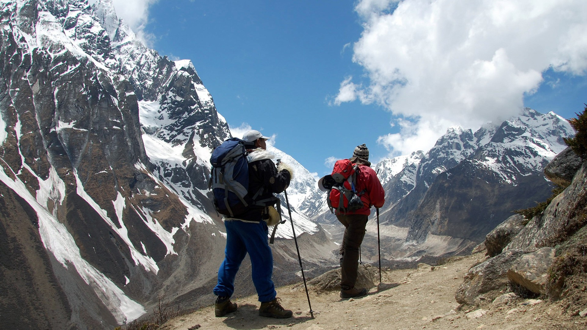
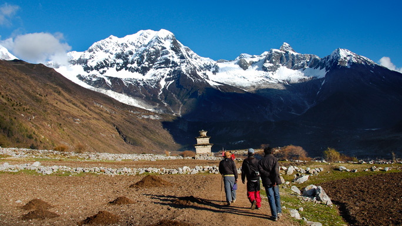
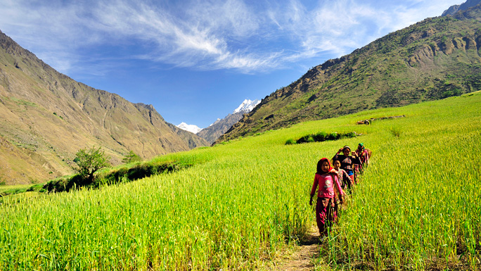
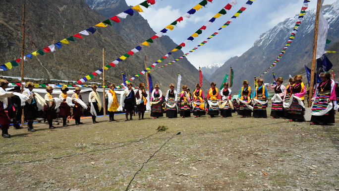
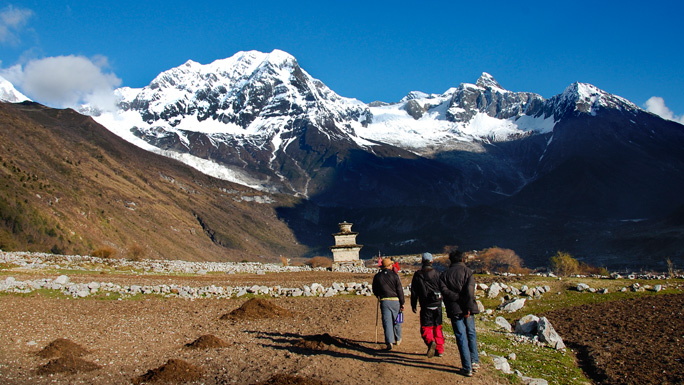
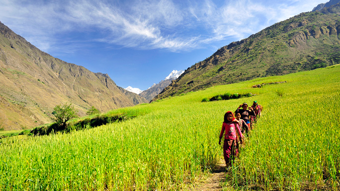
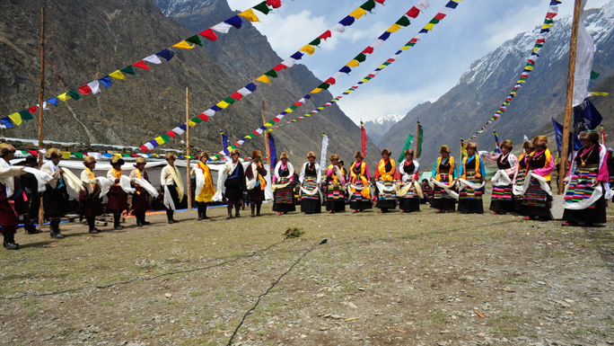

word's 8th highest peak.
MANASLU
A pristine trekking circuit which allows you to circle Mt. Manaslu,word's 8th highest peak.
A wonderfully pristine trekking circuit which allows you to circle around Mt. Manaslu, the world's eighth highest peak. Visit untrampled trails through rural Nepal with epic views that have to be seen in person to be truly experienced. Manaslu (8,152m) is an opportunity to enjoy quiet time trekking in pure bliss away from the noisy modern world.
 The trek on an ancient trail along which you enjoy authentic Nepali culture and hospitality, promises breathtaking views of Mt. Manaslu and its Himalayan peaks counterparts always on the background. Be prepared to witness the ancient culture and almost medieval lifestyle of the people as you trek up northwards. Modernization and commercialization have not touched the purity of the environment yet, so your trek to Manaslu will be a time-travel experience. Teahouses are on the trail for night stay. The other option is to camp under the starts.
 Internet access and charging of phone and other electronic equipments, are possible at the tea houses along the trail. The trek offers ample opportunities to take great pictures. Therefore, don't forget to carry a good camera!Manaslu shares much of its culture and history with its neighboring territory, Tibet. Buddhism is major religion, as one can observe Buddhist monasteries, architecture, and tradition all the way.
 The region, which was officially opened for visitors from abroad only in 1991, falls in the Restricted Areas and tourists must acquire Trekking Permit from the Department of Immigration in addition to the TIMS card for visit for visit to this region.
 The trek on an ancient trail along which you enjoy authentic Nepali culture and hospitality, promises breathtaking views of Mt. Manaslu and its Himalayan peaks counterparts always on the background. Be prepared to witness the ancient culture and almost medieval lifestyle of the people as you trek up northwards. Modernization and commercialization have not touched the purity of the environment yet, so your trek to Manaslu will be a time-travel experience. Teahouses are on the trail for night stay. The other option is to camp under the starts.
 Internet access and charging of phone and other electronic equipments, are possible at the tea houses along the trail. The trek offers ample opportunities to take great pictures. Therefore, don't forget to carry a good camera!Manaslu shares much of its culture and history with its neighboring territory, Tibet. Buddhism is major religion, as one can observe Buddhist monasteries, architecture, and tradition all the way.
 The region, which was officially opened for visitors from abroad only in 1991, falls in the Restricted Areas and tourists must acquire Trekking Permit from the Department of Immigration in addition to the TIMS card for visit for visit to this region.